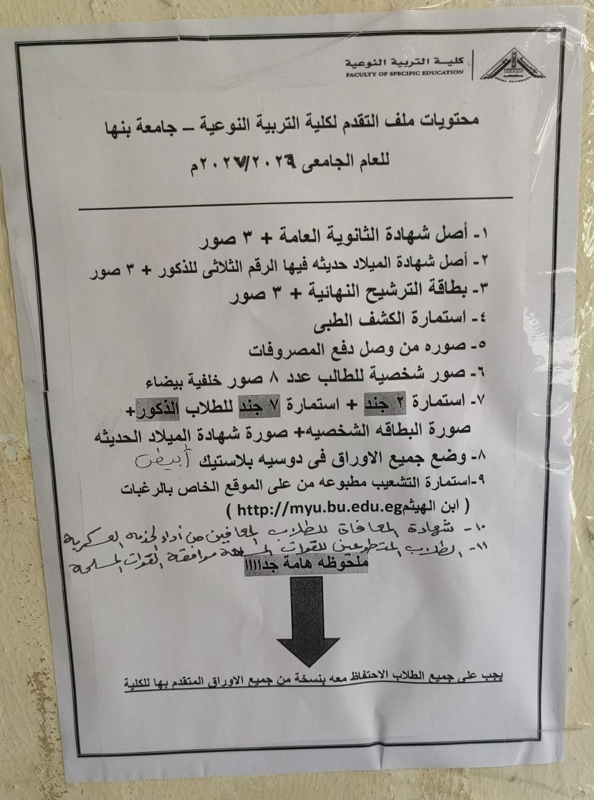

خطوات الطالب المستجد
لو إنت طالب جديد، امشِ بالخطوات دي بالترتيب عشان تكمّل إجراءاتك بسهولة.
الكشف الطبي
ادخل على نظام الكشف الطبي واحجز موعدك، ثم التزم بالموعد المحدد في استمارة الكشف.
حجز الكشف الطبي ←سداد المصروفات
بعد استكمال الإجراءات المطلوبة، احتفظ بإيصال سداد المصروفات الدراسية.
الدخول إلى نظام ابن الهيثم
استخدم نظام ابن الهيثم لمتابعة الخدمات والإجراءات الخاصة بالطالب.
دخول ابن الهيثم ←بيانات الدخول لأول مرة
عند الدخول لأول مرة، استخدم بيانات الدخول التي يتم توفيرها لك من الجامعة. اسم المستخدم هو كود الطالب الخاص بك، وكلمة المرور هي الرقم القومي، ثم يمكنك تغيير كلمة المرور.
طباعة استمارة التشعيب
بعد الدخول إلى نظام ابن الهيثم، تابع الإجراءات المطلوبة واطبع استمارة التشعيب عند إتاحتها.
تجهيز ملف التقديم
جهّز أصل المستندات المطلوبة والصور، وضعها في حافظة بلاستيكية قبل التوجه للكلية.
📋 اطلع على متطلبات التقديم
